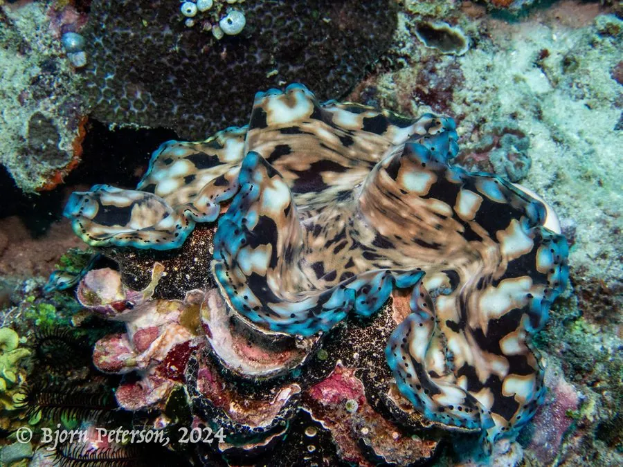

软体动物 · 动物界
鳞砗磲 Tridacna squamosa

壳大而厚重、放射肋上长有鳞片状突起的大型砗磲，与虫黄藻共生，栖息于热带珊瑚礁浅海，受国际公约保护。
- 分类
- 门软体动物门纲双壳纲目帘蛤目科砗磲科属砗磲属
- 栖息环境
- 潮间带下区至水深二十米的珊瑚礁盘与礁坡，以足丝附着
- 地理分布
- 印度洋至西太平洋热带珊瑚礁海区，包括中国南海、菲律宾和印度尼西亚
- 保护级别
- 列入《濒危野生动植物种国际贸易公约》附录二，中国国家二级保护野生动物
物种志
鳞砗磲的贝壳大而厚重，壳长可达四十厘米，两壳相等，壳面灰白至淡黄色，有数条粗大的放射肋，肋上长着一列列覆瓦状的鳞片状突起，鳞砗磲之名由此而来。壳缘呈波状，两壳闭合时留有缝隙，从中伸出肥厚的肉质外套膜，外套膜边缘呈蓝绿、褐或金黄色，里面生活着共生的虫黄藻。铰合部狭长，足丝孔发达。
它分布于印度洋至西太平洋的热带珊瑚礁海区，包括中国南海、菲律宾、印度尼西亚和澳大利亚北部，栖息在潮间带下区至水深二十米的珊瑚礁盘和礁坡，以足丝附着在礁石上，靠外套膜内的虫黄藻进行光合作用供给养分，同时滤食水中的浮游藻类。它是雌雄同体，繁殖期在夏季，幼虫浮游后附着变态。由于壳大肉厚，长期被采捕食用和加工，野生种群明显下降，被列入《濒危野生动植物种国际贸易公约》附录二，中国将其列为国家二级保护野生动物，禁止随意采捕和贸易。
形态与习性
- 壳长可达四十厘米，壳大而厚重
- 壳面有粗大放射肋，肋上具鳞片状突起
- 外套膜蓝绿、褐或金黄色，内含共生虫黄藻
- 栖息水层潮间带下区至水深二十米的珊瑚礁
- 营养靠虫黄藻光合作用供能，并滤食浮游藻类
- 保护国际公约附录二，中国国家二级保护
趣味知识
- 它外套膜里养着一群虫黄藻，晒太阳就能得到大半口粮。
- 壳肋上那排覆瓦状的鳞片，是它区别于其他砗磲的关键。
- 它被列入国际公约附录二，采捕和买卖都受到严格管制。